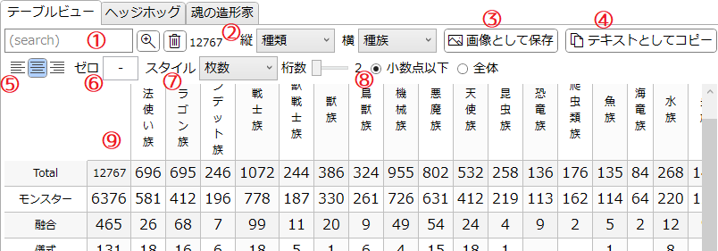
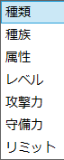
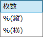
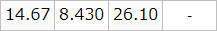
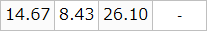
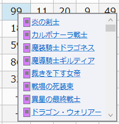

「テーブルビュー」タブ
『遊戯王OCG』(及び『Yu-Gi-Oh! TCG』)に存在するカードの統計情報を2次元の表として確認するタブです。
説明

-
サーチバー
-
テキストボックスに入力してEnterを押すとテキスト検索を適用します。
詳しくは検索ウィンドウ/文字列検索を参照してください。 -
 : 検索ウィンドウを開きます。
: 検索ウィンドウを開きます。
-
 : 絞り込みを解除します。
: 絞り込みを解除します。
- サーチバーの右端には、現在そのリストに表示されている項目の数が表示されます。
-
テキストボックスに入力してEnterを押すとテキスト検索を適用します。
-
セレクター

- 表の縦及び横の列に表示する項目を選択します。
- コンボボックスの上でマウスホイールを回すと順に変更できます。
- 「攻撃力」と「守備力」は100刻みとなります。
- 「リミット」は「レギュレーション」タブで設定された内容を反映します。
-
画像として保存
- 下に表示されている表を.png形式で保存します。
- ボタンを押した時点で同じ画像がクリップボードにも送られるため、SNSの投稿画面などに直接貼り付けることもできます。(その場合保存はキャンセルしてください)
-
テキストとしてコピー
- 下に表示されている表をタブ区切りの文字列としてクリップボードに送ります。
- この内容はMicrosoft Excelなどのスプレッドシートに直接貼り付けられます。
- 表に色を付けるなど装飾したい場合はこちらを利用してください。
-
アラインメント
- 数値セルの内容のアラインメント(揃え方向)を指定します。
- この上でマウスホイールを回すことでも変更できます。
-
ゼロ表記
- 該当するカードが存在しないセルに表示する内容を指定します。
- デフォルトは-です。
-
スタイル

- 表の各セルに表示される数値の形式を指定します。
- 「枚数」は枚数をそのまま表示します。
-
「%(縦)」は表の最上段(「Total」行)を100として、各縦列が割合で表記されます。
- 上の画像の状態で「%(縦)」を選択した場合、例えば「戦士族-融合」のセルには「全戦士族のうち、融合モンスターの割合」が%単位で表示されます。
-
「%(横)」は表の左端を100として、各行(横列)が割合で表記されます。
- 上の画像の状態で「%(横)」を選択した場合、例えば「戦士族-融合」のセルには「全融合モンスターのうち、戦士族の割合」が%単位で表示されます。
-
割合表示のオプション
- 「スタイル」が「%(縦)」または「%(横)」の場合に、セルに表示する数値の形式を指定します。
- 「小数点以下」が選択されている場合、小数点以下の桁数が指定値となるように表示されます。
-
「全体」が選択されている場合、小数点を含めた全体の桁数が指定値となるように表示されます。
- セルの見た目の幅を揃えたいときに有用です。
- いずれの場合も指定値に満たない桁は0で埋められます。
- この設定によらず、値が100%のセルには必ず100と表示されます。
-
例
-
全体、桁数5

-
小数点以下、桁数2

-
全体、桁数5
-
表エリア
-
「Total」のすぐ右には、サーチバーの検索条件に適合するカードの総数が表示されます。
- 上の画像では「12767」と表示されていますが、これはこの表の内容が12767種類のカードから検索されていることを示します。
-
1行目及び1列目には、それぞれの特徴に当てはまるカードの総数が表示されます。
- 例えば上の画像で「戦士族」の直下にある「1072」のセルは、全カード12767種類のうち「戦士族のモンスターカード」が1072種類あることを示しています。
- 例えば上の画像で「融合」のすぐ右にある「465」のセルは、全カード12767種類のうち「融合モンスターカード」が465種類あることを示しています。
-
それ以外の各セルには、各行と列の特徴を兼ね備えたカードの枚数が表示されます。
- 例えば上の画像で「戦士族-融合」のセルには「99」と表示されていますが、これは全カード12767種類のうち「戦士族の融合モンスターカード」が99種類あることを示しています。
-
セルをクリックするとそのセルの具体的なカード内容を確認できます。

- カード名にマウスカーソルを合わせると、その詳細が表示されます。
- カード名のリンクをクリックすると、そのカードのカード情報を別ウィンドウとして開きます。
-
「Total」のすぐ右には、サーチバーの検索条件に適合するカードの総数が表示されます。